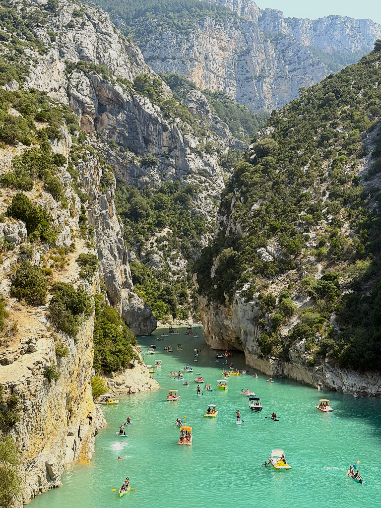

Verdon & Lac de Sainte-Croix, France - Summer 2025
There were airport runs, table-tennis rivalries, a foam party, and one cricket that found its way into the car. Even the long, chaotic journey home became part of the story.
We returned with the dream of going back — perhaps one day not just for a holiday, but for a new chapter.
A family adventure through France, full of laughter, tolls, tapenade, and the occasional cricket invasion.
🚗 The Journey Begins
We made it to Dover with one supercharge under our belt and plenty of battery to spare. Ferry crossing smooth. Spirits high. The kind of start that makes you suspicious something’s bound to go wrong later. Once on French soil, everything felt… quieter. The roads were silky smooth, the tyres practically whispering. Toll booths, however, were less poetic—€60 for the privilege of gliding along, but hey, no petrol costs, so it balanced out. Familiar scenery rolled by, though this year we took a new route down the east side: Reims, Troyes, Dijon. No family visits this time—just a fresh adventure toward Verdon near Nice. We checked into a Campanile in Beaune. All going to plan. Supercharging was seamless. The kind of efficiency that makes you feel like a travel god.
🏡 Arrival at the Cabin
Verdon greeted us with a digger and a giant hole outside our cabin. No water. No peace. No parking. The kind of welcome that makes you question your life choices. I went to complain while workmen wandered in and out, testing pipes and stealing power via extension leads. But credit where it’s due—the cabin was bigger than expected, clean, and once the water came back, we started to settle. Dinner that night was lovely. Phoebe disappeared with Melody, and Hayley and I sat on the balcony, soaking in the mild evening air. The kind of moment that makes the chaos worth it.
⚡ Tesla Drama & Airport Dash
Got hit with a Tesla idle fee thanks to a faulty charger. First-time offence waived—thank you, Elon. The next morning, despite needing a lie-in, we were up early to collect Josh and Chloe from Nice Airport. What we thought was a quick trip turned into a two-hour drive: winding roads, medieval villages, stunning views, and a motorway sprint to finish. Finding the express pickup zone was like playing hide-and-seek with signage. After circling like confused pigeons, we gambled on P5 car park and won. €4 parking and a successful reunion. On the way back, a quick supercharge and a food stock-up at Aups Intermarché. That evening, campsite entertainment kicked off—staff vs vacationers. Hayley’s translations were limited to “starts at 9pm” and “it’s chilly,” which somehow became the running joke of the night. Hayley slept well for the first time in days—no headache. Phoebe and Melody were off gallivanting, likely charming the campsite boys.
🏖️ Poolside Bliss & Foam Party Madness
The next few days were pure chill. Sunbathing by the pool, dipping in and out like lazy otters. The foam party was a blast—everyone soaked, laughing, and slightly deaf from the music. We met a father and son staying nearby. Leo, age 9, didn’t speak English but instantly bonded with Phoebe. She taught him to say “shit,” which he then repeated with glee every time we told him not to. Hayley and Chloe had a wild night—ended with Hayley being sick. Not her finest hour, but memorable nonetheless. Table tennis became a daily ritual. Josh was hooked. We all improved. Josh and I chilled with a couple of beers—stronger than expected, but we didn’t mind. He kept randomly repeating “au jordwee cest tois,” which none of us understood, and shouting “ma mare!” at full volume. No explanation, just Josh being Josh. We laughed every single time.
🌉 Chapter: Pont du Galetas – Wonder on the Water
Turquoise waters, hot sun, and cliffside courage. The kind of beauty that stays with you.

One of the standout moments of the trip—maybe even the soul of it—was our visit to the Pont du Galetas on Lac du Sainte-Croix. The kind of place that doesn’t just impress, it humbles.
The water was impossibly turquoise, like someone had dialled up the saturation just for us. The sun was hot but generous, casting golden light across the cliffs and rippling lake. We stood on the bridge, watching the world unfold below—kayakers drifting lazily, families picnicking in the shade, and a steady stream of brave souls inching toward the edge of the rocks.
There was a quiet rhythm to it: hesitation, encouragement, a deep breath… and then the leap. Splash. Repeat. It was like watching courage in slow motion. Some jumped with wild abandon, others with careful calculation—but every single one of them wore the same grin afterwards. That post-jump glow.
We didn’t jump ourselves—just watched, soaked it in, let the beauty do its work. It was one of those rare places where time slows down and everything feels just right. No noise, no rush, just awe. The kind of moment that makes you want to bottle the feeling and carry it home.
🛣️ The Return Odyssey
We left late, aiming for a hotel near Saint-Dizier. Campanile claimed they were full, despite an empty car park. Ibis was ruled out due to a crowd outside. We kept driving, hoping Reims would deliver. It didn’t. Hotels were either full or charging €129 per room at 11pm. So we pushed on to Calais. Tired but determined. Customs took an hour, but had we stuck to our original ferry slot, the wait would’ve been even longer. €69 for the crossing—cheaper than two hotel rooms and a win in disguise. Earlier in Lyon, we’d stopped for a supercharge and Burger King. As we pulled away, a cricket flew into the car. Hayley panicked. Phoebe Googled whether crickets bite. I pulled over and evicted the intruder. Chaos, laughter, and a new story for the mansion. Back in the UK, the roads were loud, bumpy, and full of traffic. Fifteen minutes from home, we ignored Tessies route suggestion and paid the price—closed A16, closed Crowland bypass, single-lane farm tracks, and diverted traffic all trying to squeeze through. It was like the universe saying, “You thought you were done? Not yet.” Eventually, we made it. Unloaded. Grabbed supplies. Collapsed into rest.
🧳 Back to Reality
Now the dust has settled, reality’s creeping back in. Work is calling. Daily routines resume. Eat, sleep, work, repeat. The hum of normal life replacing the buzz of campsite foam parties and winding French roads. But somewhere in the back of our minds, the dream lingers—of one day making it work. Moving to France. Slowing down. Savoring the scenery, the food, the rhythm. Not just a holiday… but a new chapter.